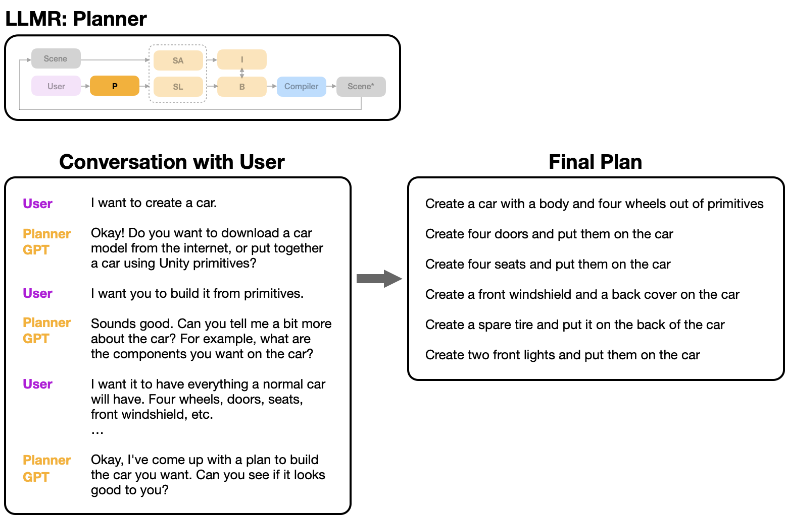
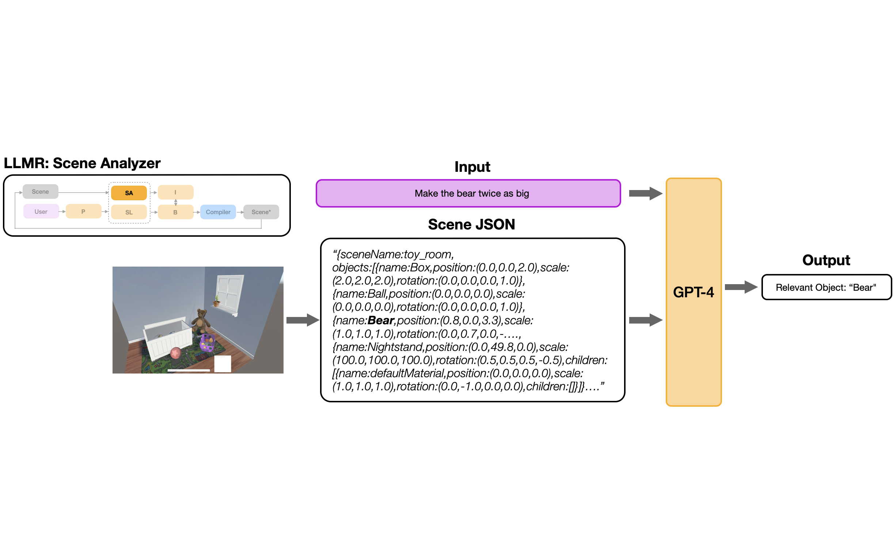
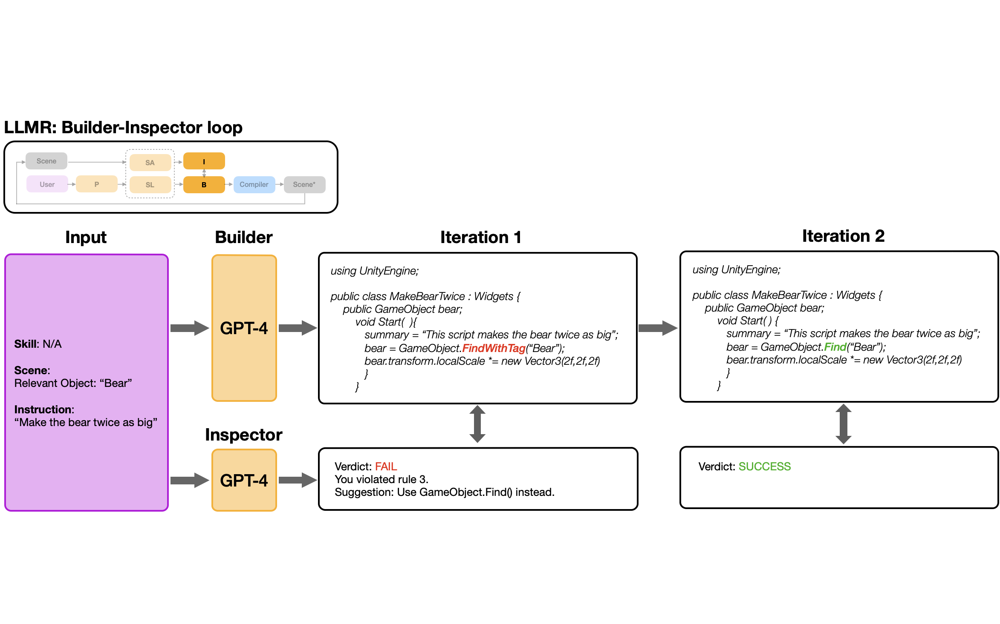
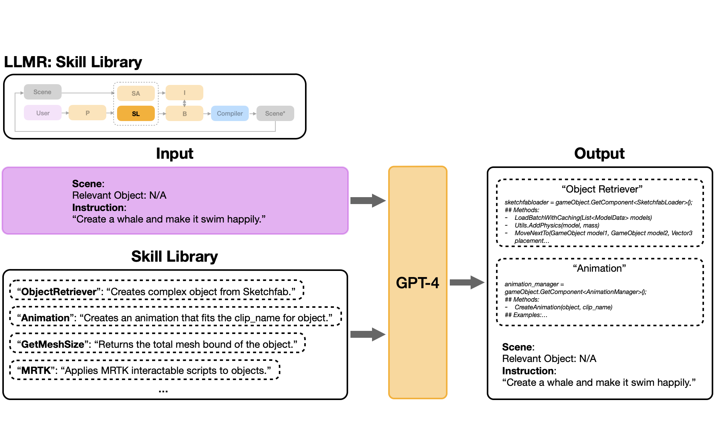
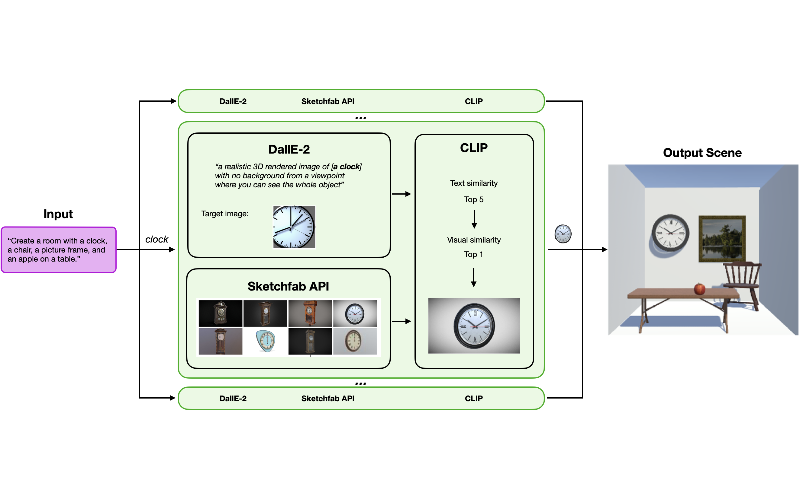

LLMR architecture for real-time interactive 3D scene generation.

The Planner and its role in breaking down a user's high-level request into a sequence of manageable subtasks.

The virtual scene is converted into a parsed scene hierarchy in JSON format. This, along with the user request, serves as input to the Scene Analyzer.

Builder-Inspector paradigm in LLMR. This feedback loop significantly enhances the quality of the generated scripts.

Skill Library module workflow.
